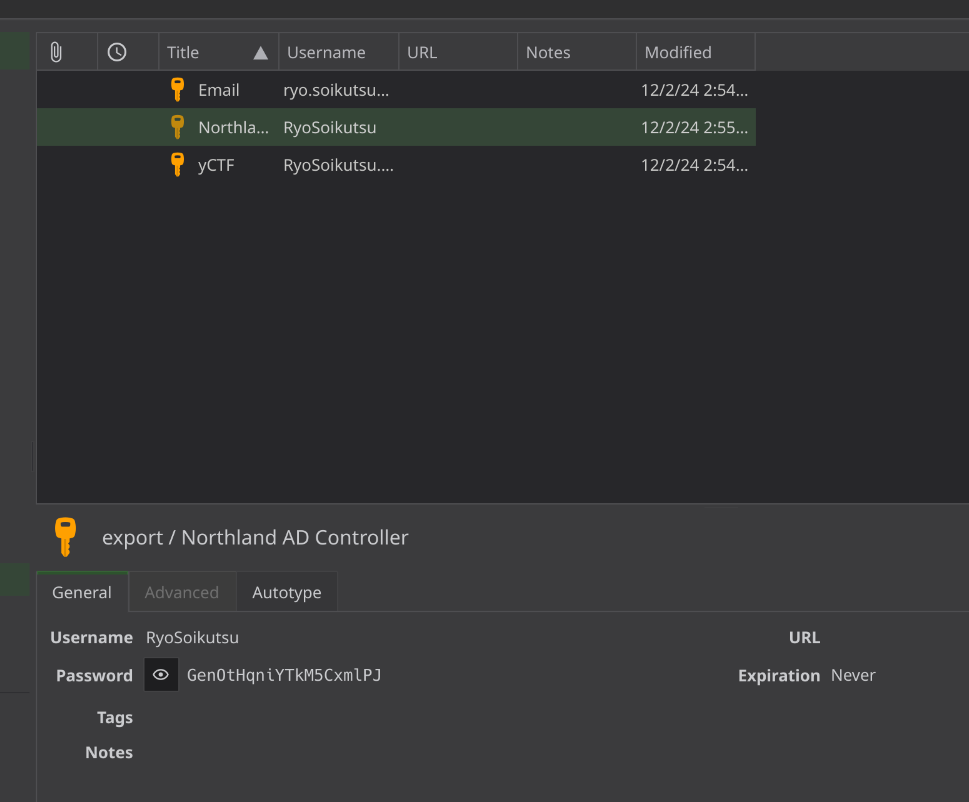
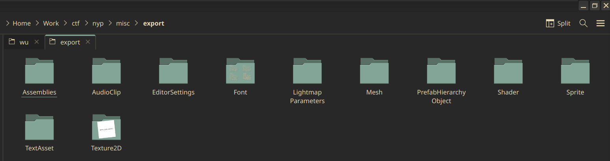

࿂
cane writeup
this wont be a complete list, there were some challenges that took far more effort than the other challenges and i thought those would be worthy of a proper writeup. i'll also be writing most of the challenges for which i was the only solve, which is a.. not insignificant number of them im gonna be real. but if u wanna know how somethin was done (and i solved it) u can just ask me thru any of my socials.
click a button below
[forensics] - keeper
big fuckin file! download the whole 9gb thing and there's two things inside, a .dmp file and an .E01 file.
┌──(navi@jinxed)-[~/…/ctf/nyp/forensics/export]
└─$ ls -alps
total 14127340
4 drwxr-xr-x 2 navi navi 4096 Dec 26 23:47 ./
4 drwxr-xr-x 9 navi navi 4096 Dec 26 21:31 ../
4194316 -rw-r--r-- 1 navi navi 4294975488 Dec 1 11:11 memory.dmp
9933016 -rw-r--r-- 1 navi navi 10171403645 Dec 1 11:24 shikanoko.E01
we'll start with the .E01 file. an .E01 file is practically an image of a hard drive - it contains every file on it, and it's possible to mount it as one. on windows you could use something like Autopsy / Encase to image the .E01 file, i opted to mount it on my filesystem instead. this was probably a mistake because it's a huge hassle but whatever.
┌──(navi@jinxed)-[~/…/ctf/nyp/forensics/export]
└─$ sudo xmount --in ewf shikanoko.E01 /tmp/mnt
┌──(navi@jinxed)-[~/…/ctf/nyp/forensics/export]
└─$ sudo parted /tmp/mnt/shikanoko.dd unit B print
Warning: Unable to open /tmp/mnt/shikanoko.dd read-write (Permission denied).
/tmp/mnt/shikanoko.dd hasbeen opened read-only.
Model: (file)
Disk /tmp/mnt/shikanoko.dd: 63743499776B
Sector size (logical/physical): 512B/512B
Partition Table: loop
Disk Flags:
Number Start End Size File system Flags
1 0B 63743499775B 63743499776B ntfs
┌──(navi@jinxed)-[~/…/ctf/nyp/forensics/export]
└─$ sudo mount -o loop,offset=0 /tmp/mnt/shikanoko.dd /tmp/mnt2
first we mount the e01 into a .dd file, then view the partition table. the partition table just tells us that there's only one partition so we don't need to specify an offset when we mount. then, we mount the .dd file into a filesystem we can look through
┌──(navi@jinxed)-[/tmp/mnt2]
└─$ ls -alps
total 1458228
4 drwxrwxrwx 1 root root 4096 Nov 30 07:14 ./
0 drwxrwxrwt 20 root root 500 Dec 27 00:30 ../
4 drwxrwxrwx 1 root root 4096 Nov 28 09:23 '$Recycle.Bin'/
0 drwxrwxrwx 1 root root 0 Nov 30 07:14 '$WinREAgent'/
0 lrwxrwxrwx 2 root root 15 Nov 29 01:11 'Documents and Settings'
8 -rwxrwxrwx 2 root root 8192 Dec 2 03:07 DumpStack.log.tmp
1441792 -rwxrwxrwx 1 root root 1476395008 Dec 2 03:07 pagefile.sys
0 drwxrwxrwx 1 root root 0 Dec 7 2019 PerfLogs/
4 drwxrwxrwx 1 root root 4096 Nov 29 01:21 ProgramData/
4 drwxrwxrwx 1 root root 4096 Nov 29 01:21 'Program Files'/
4 drwxrwxrwx 1 root root 4096 Nov 29 01:25 'Program Files (x86)'/
0 drwxrwxrwx 1 root root 0 Nov 29 01:11 Recovery/
16384 -rwxrwxrwx 1 root root 16777216 Dec 2 03:07 swapfile.sys
4 drwxrwxrwx 1 root root 4096 Nov 29 01:11 'System Volume Information'/
4 drwxrwxrwx 1 root root 4096 Nov 29 01:23 Users/
16 drwxrwxrwx 1 root root 16384 Nov 29 01:13 Windows/
it looks like a standard Windows filesystem, like any other. we just need to do some enumeration and find what files may be interesting. to be honest, when i did this challenge i guessed from the title and some information given that we were looking for a keepass database. but, it doesn't take too long to chance upon it yourself if you just spend a few minutes combing through the files. it's in a users' Documents folder.
┌──(navi@jinxed)-[/tmp/mnt2/Users/Ryo Soikutsu/Documents]
└─$ ls
desktop.ini export.kdbx 'My Music' 'My Pictures' 'My Videos'
we'll take this export.kdbx file for later, and turn our attention back to the .dmp file. but fyi a .kdbx file is a keepass database, a password manager that stores all of your passwords in a heavily encrypted file. we need the master password to access it. i myself actually use keepass just day-to-day so it was q nice to be familiar with it.
since there's nothing we can do with the .kdbx file without the master password, we should try to find a way to recover that through the .dmp file. i wasted my time trying to use Volatility, which was a nightmare, but after a little googling i found a github repo that claims to be able to dump keepass master passwords when they're stored in memory.
a python port of the repo is here. i'll just clone it and run it. it takes like 20 minutes, but it ultimately outputs that the password is ShikanokoNokonokoKoshtantan.
Possible password: ●MiNanokoNokonokoKoshtantan
Possible password: ●#ikanokoNokonokoKoshtantan
Possible password: ●#iNanokoNokonokoKoshtantan
[1] + done python keepass-dump-masterkey/poc.py memory.dmp
shikanoko nokonoko koshitantan. shikanoko nokonoko koshitantan. shikanoko nokonoko koshitantan. shikanoko nokonoko koshitantan. shikanoko nokonoko koshitantan
according to the challenge that's one half of the flag already. we just need to get the other half, which is stored in the keepass database. you can open the .kdbx file with the keepass application or you can use kpcli, whichever you like. i just already had keepass installed so it was easier.

retrieving the flag from here is trivial and left as an exercise to the reader.
[forensics] - secure the network
probably my favorite challenge of the entire event? you're given some log files and have to answer a bunch of questions about an attack. something about this was just very fun and satisfying for me, i liked it a lot.
the format for this writeup will be a bit different. i'll just post a bunch of grep commands that found me the answers, because you can indeed solve this entire challenge just by grepping.
i also wrote a program to automate the submission process for me, here:
from pwn import *
from sys import exit
host = "34.142.181.57"
port = 8008
r = remote(host, port)
answers = [
"201.172.32.43",
"201.172.32.234",
"nmap",
"path traversal",
"dirbuster",
"2024-11-15 11:47:17",
"auth.log_error.log",
"1730707767"
]
sk = True
try:
r = remote(host, port)
for i in answers:
line = r.recvuntil('>')
print(line)
r.sendline(i)
while sk:
line = r.recvall(timeout=1)
print(line)
d = input("submit - q to exit: ")
if d == "q": sk = false
r.sendline(d)
except:
print('oops')
r.close()
qn 1: ## What is the IP address of the attacker?
i hope none of you get the impression that i'm smart and know what i'm doing. i hope i can prove it to you definitively that i'm stupid, because the way i solved this was to recursively grep for literally every fucking IP address in the file, get a list of all the unique ones, and just try them until they worked.
┌──(ctfvenv)─(navi@jinxed)-[~/…/ctf/nyp/forensics/netwk]
└─$ grep -roP '\b(?:\d{1,3}\.){3}\d{1,3}\b' . | sort | cut -f2 -d':' |
uniq | grep -v "192.168.*" | grep -v "127*" | grep -v "binary"
10.100.30.0
201.172.32.234
201.172.32.250
201.172.32.234
201.172.32.43
0.9.6.2
100.100.100.200
10.10.10.10
201.172.32.17
201.172.32.234
201.172.32.43
201.172.32.7
169.254.169.254
192.0.0.192
92.0.902.67
201.172.32.17
201.172.32.234
201.172.32.30
201.172.32.43
255.255.255.255
201.172.32.17
201.172.32.43
0.99.7.1
0.0.0.0
255.0.0.0
255.255.255.0
255.255.255.255
255.0.0.0
170.0.0.192
171.0.0.192
91.189.91.157
170.0.0.192
171.0.0.192
201.172.32.17
201.172.32.43
170.0.0.192
171.0.0.192
0.0.0.0
169.254.235.141
169.254.255.255
192.203.230.10
192.36.148.17
192.5.5.241
198.41.0.4
198.97.190.53
199.7.83.42
199.7.91.13
199.9.14.201
201.172.32.1
201.172.32.17
201.172.32.250
201.172.32.255
201.172.32.30
201.172.32.43
201.172.32.7
224.0.0.22
224.0.0.251
224.0.0.252
239.255.255.250
255.255.255.255
0.0.0.0
169.254.235.141
169.254.255.255
192.203.230.10
192.36.148.17
192.5.5.241
198.41.0.4
198.97.190.53
199.7.83.42
199.7.91.13
199.9.14.201
201.172.32.1
201.172.32.17
201.172.32.250
201.172.32.255
201.172.32.30
201.172.32.43
201.172.32.7
224.0.0.22
224.0.0.251
224.0.0.252
239.255.255.250
255.255.255.255
mm yes very challenge
qn 2: ## What is the public IP address of the webserver?
see above
qn 3: ## What tool did the attacker likely use to port scan the target? Answer in all lower-case
i mean really you can just guess that this was Nmap but looking through access.log you can get a lot of logs that mention the "Nmap Scripting Engine".
┌──(navi@jinxed)-[~/…/ctf/nyp/forensics/netwk]
└─$ grep -R "nmap" .
./ip:./log/apache2/access.log.1:201.172.32.43 - -
[13/Nov/2024:09:04:07 +0000] "GET /nmaplowercheck1731459848 HTTP/1.1" 404 382 "-"
"Mozilla/5.0 (compatible; Nmap Scripting Engine; https://nmap.org/book/nse.html)"
./ip:./log/apache2/access.log.1:201.172.32.43 - -
[13/Nov/2024:09:04:07 +0000] "GET / HTTP/1.1" 200 7645 "-"
"Mozilla/5.0 (compatible; Nmap Scripting Engine; https://nmap.org/book/nse.html)"
./ip:./log/apache2/access.log.1:201.172.32.43 - -
[13/Nov/2024:09:04:07 +0000] "OPTIONS / HTTP/1.1" 200 216 "-"
"Mozilla/5.0 (compatible; Nmap Scripting Engine; https://nmap.org/book/nse.html)"
qn 4: ## What technique did the attacker use?
you can't grep for this one you just have to read error.log and scroll through it and pray. the reason you know to look at error.log / access.log is because you know the attacker targeted the webserver, and error.log and access.log are where apache stores its logs for the webserver.
[Fri Nov 15 11:38:11.878937 2024] [core:error]
[pid 1404:tid 135829397702336]
[client 201.172.32.17:42418] AH10244: invalid URI path
(/htdocs/../../../../../../../../../../../etc/passwd)
this ../ slash bullshit is classic path traversal - i initially thought it was local file inclusion, but eventually i got the right answer after thinking about it a little.
qn 5: ## What enumeration tool was used on the webserver?
this'll also be in access.log or error.log. just look around a bit and you'll see the swarm of DirBuster logs:
apache2/access.log:201.172.32.43 - - [15/Nov/2024:
11:14:13 +0000] "GET /thereIsNoWayThat-You-CanBeThere/
HTTP/1.1" 404 363 "-" "DirBuster-1.0-RC1
(http://www.owasp.org/index.php/Category:OWASP_DirBuster_Project)"
qn 6: ## The attacker attempted to access the web server through SSH. What is the timestamp for the successful access? Answer in UTC (Format is YYYY-MM-DD HH:MM:SS)
this one we can grep for. sshd (sshdaemon) is what handles ssh login attempts, so just recursively grep for sshd. the log that'll have auth requests will be in auth.log, so you can filter out a lot of garbage by just specifically grepping auth.log. i personally didn't know that though, so grep -R to the rescue...
┌──(ctfvenv)─(navi@jinxed)-[~/…/ctf/nyp/forensics/netwk]
└─$ grep -R "sshd" .
./ip:./log/auth.log:2024-11-15T11:47:17.714003+00:00
webserver-ybn sshd[2205]:
Accepted password for user from 201.172.32.43 port 43214 ssh2
qn 7: ## The attacker attempted to erase any traces of their attack by deleting system logs. Which files were modified by the attacker Answer in filename 1_filename 2
i struggled a lot with this one. at first i tried searching for a bash history or some logs of commands that were run by grepping for 'command', 'cd', 'ls' or 'rm' - no luck. these command history logs are really only stored in .bash_history files, and we don't have a .bash_history file given to us in our folder.
next failed attempt was looking for file modification logs, which linux just does not have by default. i scoured through the journal files with journalctl and ended up empty handed as well.
then, finally, timestamps. the question specifies 'modified', not 'deleted', and linux records when files were last deleted. so, let's see if there are any outliers:
┌──(ctfvenv)─(navi@jinxed)-[~/…/ctf/nyp/forensics/netwk]
└─$ find . -type f -name "*" -execdir stat {} \; | grep Modify: | uniq
Modify: 2024-12-26 21:31:13.877706103 +0800
Modify: 2024-11-15 16:17:11.000000000 +0800
Modify: 2024-11-15 16:16:54.000000000 +0800
Modify: 2024-12-26 17:18:24.901940568 +0800
Modify: 2024-11-16 00:13:19.000000000 +0800
Modify: 2024-11-16 00:13:18.000000000 +0800
Modify: 2024-11-16 00:13:19.000000000 +0800
Modify: 2024-11-16 00:13:18.000000000 +0800
Modify: 2024-11-16 00:13:19.000000000 +0800
Modify: 2024-12-26 23:01:45.308332720 +0800
Modify: 2024-11-16 00:13:18.000000000 +0800
Modify: 2024-11-16 00:13:19.000000000 +0800
Modify: 2024-12-02 09:04:22.000000000 +0800
Modify: 2024-11-16 00:13:19.000000000 +0800
Modify: 2024-12-23 20:22:44.000000000 +0800
Modify: 2024-11-16 00:13:19.000000000 +0800
Modify: 2024-11-16 00:13:18.000000000 +0800
Modify: 2024-11-16 00:13:19.000000000 +0800
most of the files were last modified on 11-16, so let's filter those out:
┌──(ctfvenv)─(navi@jinxed)-[~/…/ctf/nyp/forensics/netwk]
└─$ find . -type f -name "*" -execdir stat {} \; | grep "12-02" -B 5
File: ./error.log
Size: 8709 Blocks: 24 IO Block: 4096 regular file
Device: 259,3 Inode: 10235405 Links: 1
Access: (0777/-rwxrwxrwx) Uid: ( 1000/ navi) Gid: ( 1000/ navi)
Access: 2024-12-27 20:16:55.992465871 +0800
Modify: 2024-12-02 09:04:22.000000000 +0800
as i'm creating the writeup i realize i must have edited the other file in some way, because it's not showing up in my grep and i'm far too lazy to correct that error. just take my word for it that both auth.log and error.log were modified on 12-02, and that is our answer.
qn 8: ## Upon further analysis of our firewall logs, it seems like one of the sysadmins had left in a rule which allowed for the attacker to access the remote server through SSH. Identify this overly-permissive rule. Answer is the rule's tracker ID
grep on the pfsense logs for entries that go through port 22.
┌──(ctfvenv)─(navi@jinxed)-[~/…/ctf/nyp/forensics/netwk]
└─$ grep ,22, pfsense.log
Nov 15 10:22:34 192.168.10.25 filterlog[44820]: 86,,,1730707767,em0,match,pass,in,4,0x0,,64,16230,0,DF,6,tcp,60,201.172.32.43,10.125.30.5,43292,22,0,S,1054003302,,32120,,mss;sackOK;TS;nop;wscale
Nov 15 10:22:45 192.168.10.25 filterlog[44820]: 86,,,1730707767,em0,match,pass,in,4,0x0,,64,15573,0,DF,6,tcp,60,201.172.32.43,10.125.30.5,56792,22,0,S,1374330908,,32120,,mss;sackOK;TS;nop;wscale
the pfsense logs are kind of an ugly mess but the important parts here are the 10 digit number, 'match' meaning that the rule matched it, and 'pass' meaning that the rule allowed the packet to pass through the firewall.
the id is the 10 digit number, and with that, we're done w the challenge.
[+] Receiving all data: Done (117B)
[*] Closed connection to 34.142.181.57 port 8008
b' All questions answered correctly.
Assignment marked as completed.\n\x1b[32m
Admin message: NYP{N0rth_Po1E_53cUr3d!!}\x1b[0m\n'
[crypto] - long christmas generator
it's time for you bastards to learn about how rsa works.
from Crypto.Util.number import getPrime, bytes_to_long
from random import randint
from math import gcd
e = 3
p, q = getPrime(1024), getPrime(1024)
n = p*q
assert gcd(e, (p-1)*(q-1)) == 1
with open(r"flag.txt", "rb") as f:
flag = bytes_to_long(f.read().strip())
flag1 = randint(1, flag // 2)
flag2 = randint(1, (flag - flag1) // 2)
flag3 = flag - flag1 - flag2
assert flag == flag1 + flag2 + flag3
m = getPrime(128)
a, c = randint(1, 2**32), randint(1, 2**32)
seed = randint(0,m)
class LoooongChristmassssGreeting:
def __init__(self, m, a, c, seed):
self.m = m
self.a = a
self.c = c
self.seed = seed
def next(self):
self.seed = (self.a*self.seed + self.c) % self.m
return self.seed
looooooooongchristmassgreeting = LoooongChristmassssGreeting(m, a, c, seed)
output = [looooooooongchristmassgreeting.next() for i in range(15)]
santa_clue1 = pow(output[0]*flag1 + output[1], e, n)
santa_clue2 = pow(output[2]*flag2 + output[3], e, n)
santa_clue3 = pow(output[4]*flag3 + output[5], e, n)
merry_hints = output[7:]
with open("envelope", "w") as f:
f.write("""
**********************************************
MERRY CHRISTMAS!
**********************************************
Wishing you a season filled with joy, love, and all the cozy moments
that make this time of year so special. This Christmas, may your heart
be as full as the table at a family feast, and your laughter as abundant
as the twinkling lights decorating the streets.
May your days be merry and bright, like a beautifully lit Christmas tree,
and your home warm and inviting with the love of those who matter most.
Whether you're enjoying sweet treats, sipping on hot cocoa, or exchanging
thoughtful gifts, I hope every moment reminds you of the magic of the season
and the blessings of togetherness.
**********************************************
Festive Variable Showcase!
**********************************************
""")
f.write(f"Santa's Clue 1: {santa_clue1}\n")
f.write(f"Santa's Clue 2: {santa_clue2}\n")
f.write(f"Santa's Clue 3: {santa_clue3}\n")
f.write(f"Christmas Hints: {merry_hints}\n")
f.write("""
**********************************************
* * * * *
* MERRY CHRISTMAS! *
* * * * *
**********************************************
""")
this challenge consists of two parts. first you have a linear congruential generator. you're given 7 outputs from the LCG, and then you need to reverse-engineer the LCG to generate the previous 7 outputs. after you crack the previous 7 outputs, the next step is to use those values to crack the RSA encryption.
we'll start with LCGs. breaking LCGs is a known, very-easily solved problem that you can find a lot of resources online to assist you. here's a link to a repository of a python script that does it - i unfortunately did not find this script during the ctf so i ended up writing my own, and i cannot guarantee that it works.
regardless here's my code.
from random import randint
merry_hints = [""] # removed for brevity
t = []
for index in range(len(merry_hints) - 1):
t_n = merry_hints[index + 1] - merry_hints[index]
t.append(t_n)
u = []
for index in range(len(t) - 2):
u_n = abs(t[index+2] * t[index] - t[index + 1] ** 2)
u.append(u_n)
calculated_m = gcd(*u)
x1, x2, x3 = merry_hints[:3]
calculated_a = ((x2 - x3) * pow(x1 - x2, -1, calculated_m)) % calculated_m
calculated_c = (x2 - x1 * calculated_a) % calculated_m
recovered = []
x0 = x1
for i in range(7):
mod_inv = pow(calculated_a, -1, calculated_m)
d = ((calculated_m - mod_inv) * calculated_c) % calculated_m
x0 = (mod_inv * x0 + d) % calculated_m
recovered.append(x0)
the next step is breaking the RSA. RSA breaking, in comparison to LCG breaking, is a very messy, confusing and unintuitive piece of math that's honestly quite daunting if you're not sure what you're doing.
but i'm not even gonna need to explain RSA to show how to break the RSA, to be honest. all you need to know is how modular arithmetic works. let's read the program again:
e = 3
p = getPrime(1024)
q = getPrime(1024)
n = p * q
santa_clue1 = pow(output[0]*flag1 + output[1], e, n)
santa_clue2 = pow(output[2]*flag2 + output[3], e, n)
santa_clue3 = pow(output[4]*flag3 + output[5], e, n)
breaking it down, we have our exponent of 3 (which is pretty low for RSA, which is quite notable). we have our primes p and q which are 1024-bit prime numbers. these are huge numbers! these are very, very big numbers.
then, we get santa_clues by cubing our flag (plus some of the values from the LCG, which we already have) and taking it mod n. the strength of RSA lies in the fact that undoing a modular exponentiation like this is extremely computationally difficult unless you have the factors of n. the prime factors of n are huge, and we have literally no shot at trying to factor them.
but... if the modulus used in modular exponentiation is so absurdly large, and our exponent is comparatively small, the chance that our result is less than the modulus is pretty high. what that means is that the modulus is completely irrelevant. and undoing a regular exponentiation is stupid easy! just cube root it.
so, we don't need to do any sophisticated attack at all! just cube root the given values, and solve for the flag. i won't go over it in fine detail, but here's my code to solve the entire challenge:
from Crypto.Util.number import getPrime, bytes_to_long, long_to_bytes
from random import randint
from math import gcd
from gmpy2 import iroot
# values removed for brevity
t = []
for index in range(len(merry_hints) - 1):
t_n = merry_hints[index + 1] - merry_hints[index]
t.append(t_n)
u = []
for index in range(len(t) - 2):
u_n = abs(t[index+2] * t[index] - t[index + 1] ** 2)
u.append(u_n)
calculated_m = gcd(*u)
x1, x2, x3 = merry_hints[:3]
calculated_a = ((x2 - x3) * pow(x1 - x2, -1, calculated_m)) % calculated_m
calculated_c = (x2 - x1 * calculated_a) % calculated_m
recovered = []
x0 = x1
for i in range(7):
mod_inv = pow(calculated_a, -1, calculated_m)
d = ((calculated_m - mod_inv) * calculated_c) % calculated_m
x0 = (mod_inv * x0 + d) % calculated_m
recovered.append(x0)
# because the chosen value for n is so ridiculously big and e is extremely small (3)
# the RSA is crackable by just.. taking the cube root of the given values
# :thinking:
recovered.reverse()
recovered_m1 = iroot(santa_clue1, 3)[0]
recovered_m2 = iroot(santa_clue2, 3)[0]
recovered_m3 = iroot(santa_clue3, 3)[0]
f1 = (recovered_m1 - recovered[1]) // recovered[0]
f2 = (recovered_m2 - recovered[3]) // recovered[2]
f3 = (recovered_m3 - recovered[5]) // recovered[4]
flag = f1 + f2 + f3
print(long_to_bytes(flag))
[crypto] - secure shipments
a cool secret ctf tactic that i used to solve this challenge is i did YbN ctf a month ago and it basically had this exact challenge in it, down to the concept.
they give you two files, a startup script and a python file. just right off the bat you should be wary of the .sh file - they wouldn't give this to you for no reason, and indeed the reason makes itself obvious when you read the file:
#!/bin/bash
RAND_SEED=$RANDOM
export RAND_SEED # Credits to Jabriel for the idea
export FLAG="NYP{fake_flag}"
socat -dd TCP-LISTEN:1337,fork,reuseaddr EXEC:"python server.py"
what exactly is $RANDOM? googling it we can see that bash generates a random number from 1 to 32767. this is a vanishingly small range, and relatively quick work for a computer to brute force through. in comparison, python's random() function generates 32 bit numbers which is way more time consuming (altho not impossible) to brute force. 32767 can be done in a matter of seconds.
but anyways let's see how this random number is utilized:
from string import ascii_lowercase, ascii_uppercase, digits
import os
import random
RAND_SEED = os.getenv("RAND_SEED")
random.seed(RAND_SEED)
def generate_random_string():
return "".join([random.choice(ascii_lowercase + ascii_uppercase + digits) for _ in range(32)])
shipments = 160
print(f"Logged in to the Santa Port! Your user ID is \"{generate_random_string()}\"")
print("Pending shipments: 160...")
for i in range(shipments):
print('*'*8, f"Shipment {i+1}", '*'*8)
answer_string = generate_random_string()
guess = str(input("Compute shipment signature: "))
if guess != answer_string:
print("Invalid signature detected! Terminating connection...")
exit()
print()
print(f"All shipments delivered.\n Admin notification: {os.getenv('FLAG')}")
so first, it seeds python's random module with random.seed(), and generates a random ID with that seeded module. since the only possible values of the seed are 0 to 32767, we can just brute force every possible seed and see if we can get a match.
then, it continually generates random strings with the same function and asks us to check the signature. if we can recover the seed, we can generate as many random strings we want, and it will always match. we only need to do this 160 times to get the flag. this is pretty trivial to implement in python, so let's do it:
from pwn import *
from string import ascii_lowercase, ascii_uppercase, digits
import random
host = "34.142.181.57"
port = 8007
r = remote(host, port)
def generate_random_string():
return "".join([random.choice(ascii_lowercase + ascii_uppercase + digits) for _ in range(32)])
while True:
line = r.recvline()
print(line)
user_id = str(line).split(" ")[-1].split("\"")[1]
print(user_id)
for i in range(0, 33000):
random.seed(i)
if generate_random_string() == user_id:
print(f'seed found: {i}')
break
for x in range(160):
print(r.recvline())
print(r.recvline())
new_shipment = generate_random_string()
r.sendline(new_shipment)
print(r.recvline())
print(r.recvline())
r.close()
run it:
b'******** Shipment 160 ********\n'
b'Compute shipment signature: \n'
b'All shipments delivered.\n'
b' Admin notification: NYP{wH0_kN0w5_8a5H_R4nD0m_w4sn7_s0_rAnD0m_4ft3r_4ll}\n'
[misc] - lost in the snow
it's a unity .assets file. personally i had zero experience with these types of files (i've never programmed in unity and don't intend to start ever), nor did i even recognize the file extension. running `file` on it just tells you it's 'data', which is helpful. but googling eventually tells you that it's a unity file.
there are online tools to rip assets out of unity files, such as assetripper. i honestly dont feel like explaining how to install and use assetripper if youre doing a ctf you should know how to clone a git repo. anyways after you export all the files with the app, just peek through all the directories until you find something interesting.
doing this is well, easier said than done. there is a BUNCH of garbage, a bunch of random json files to sift through. i personally am very lucky, because my specific file explorer made the .png stick out like a sore thumb. i imagine this will happen on windows as well, though.

wow! that's the flag. i'm not showing you the image, if you want it, go download assetripper and try it out yourself :3